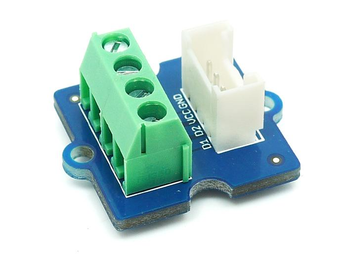

Grove - Screw Terminal with four 3.5mm pitch pins rate up to 125V @ 6A. Terminal can accept 30 to 20AWG wire. It is the most common pitch screw terminal. This grove has four ports, including GND, VCC and two other undefined ports. Screw terminals are commonly used to connect a chassis ground, such as on a record player or a surge protector. Most public address systems in buildings also use them for speakers, and sometimes for other outputs and inputs.
Model: COM12533P
.
Have you ever owned a stereo with huge speakers that had to connect by yourself? What about surround sound speakers for your television set? Do you remember to connect the speakers to your stereo or television? If you had an old stereo, there is a good chance that your speakers could be connected with a screw terminal. The wire from each speaker would connect to the stereo unit, and to secure the connection you would tighten the screw on the back of your stereo. Once the wires are tightened, your speakers are connected and you could start listening to music.
Hardware Installation Step as show below：
Connect the Screw Terminal to Digital I/O 10 of the Grove - Base Shield and then plug the Base Shield into Arduino/Seeeduino.
Connect device into the Screw Terminal.
If you have questions or other better design ideas, you can go to our forum or wish to discuss.
Copyright (c) 2008-2016 Seeed Development Limited (www.seeedstudio.com / www.seeed.cc)